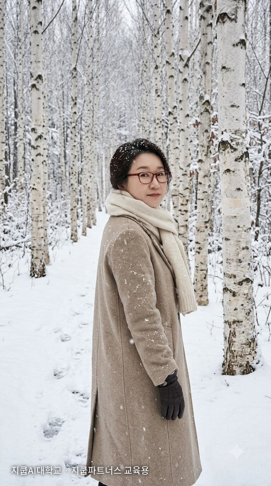

오늘의 프롬프트AI로사쌤 · 2번
자작나무 숲 눈길, 사진에서 영상까지
먼저 사진을 만들고, 그 사진으로 영상을 만드는 두 단계예요. 남녀 누구나 쓸 수 있어요.
1단계사진 만들기

제미나이나 챗GPT에 본인 사진을 먼저 올리고, 아래 프롬프트를 붙여넣으세요.
업로드한 사진 속 인물을 주인공으로 사용. 사진 속 인물이 여성이면 여성, 남성이면 남성으로 표현하고 얼굴은 사진 속 인물 그대로 유지. 인물이 하얀 자작나무 숲 눈길을 걷다가 어깨 너머로 뒤돌아보는 모습. 베이지 울 롱코트와 크림색 머플러, 가죽 장갑, 어깨와 머리카락에 눈송이가 내려앉음. 배경은 검은 무늬가 선명한 자작나무 줄기가 끝없이 이어지고, 눈길에 발자국이 찍혀 있으며 함박눈이 내림. 흐린 날의 부드러운 확산광. 초고해상도 4K 실사 사진, 피부결·머리카락·울 원단 질감·나무껍질·눈 결정까지 선명하게, 배경과 소품도 뭉개짐 없이 정밀 묘사, 자연스러운 손가락과 신체 비율, 이미지 안에 글자·로고·워터마크 없음, 세로 9:16.
2단계영상 만들기
1단계에서 만든 사진을 영상 도구에 첫 장면으로 올리고, 아래 프롬프트를 붙여넣으세요.
첫 프레임 이미지 속 인물의 성별, 얼굴, 의상, 배경을 끝까지 동일하게 유지. 0~4초: 인물이 눈길을 천천히 걸어가고 코트 자락이 흔들리며 발자국이 남음. 4~7초: 걸음을 멈추고 손바닥을 펴 내리는 눈송이를 받음. 7~10초: 카메라를 향해 돌아서 미소 지으며 한국어로 말한다: "눈 오는 날은 이 길이 제일 예뻐요." 카메라는 뒤에서 천천히 따라가는 팔로우 샷. 소리는 뽀드득 눈 밟는 소리. 4K 고해상도 실사 영상, 10초 원테이크, 움직임은 물리적으로 자연스럽고 부드럽게, 얼굴과 손 변형 없음, 대사는 입 모양에 맞춰 자연스럽게, 화면에 자막·글자·로고 없음.
출처 · AI로사쌤